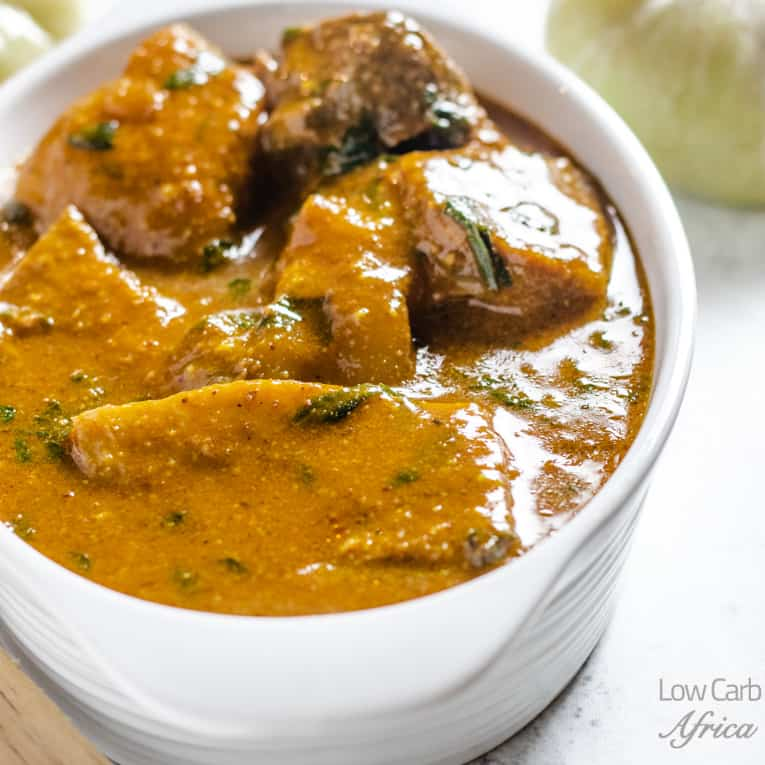

Ogbono Soup

Description
Simple and Quick recipe to make some tasty Ogbono Soup.
Ingredients
- 1 Cup blended Ogbono or wild mango seed
- 4 Cups stock Beef or Chicken
- Meat Tripe, cow skin or Fish of choice
- 1 Cup Stock Fish
Steps
- Cut the beef rinse and throw into a pot. season with Salt, bullion powder (or stock cubes). Add the diced Onions and the red chili flakes, Leave to boil for about 20 to 30 minutes depending on how tender you want the meat to be.
- Blend the Ogbono seeds and add it to the boiling meat: Be sure you have enough stock in the pot. You need about four cups of stock to start with. Stir very well until the Ogbono is well dissolved in the stock